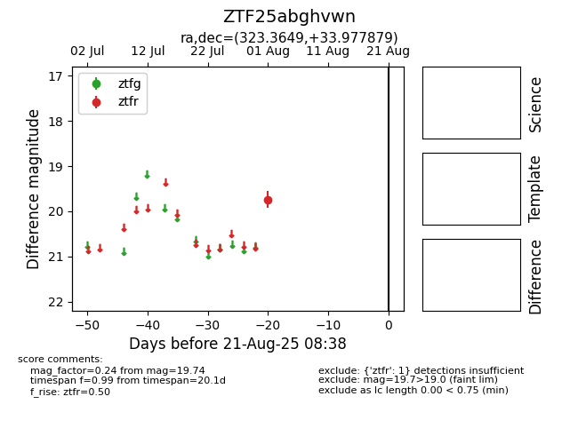

Target ZTF25abghvwn at 2025-08-21 08:38, see:
FINK: fink-portal.org/ZTF25abghvwn
Lasair: lasair-ztf.lsst.ac.uk/objects/ZTF25abghvwn
ALeRCE: alerce.online/object/ZTF25abghvwn
alt names
ZTF25abghvwn (ztf,alerce)
coordinates:
equatorial (ra, dec) = (323.3649,+33.97788)
galactic (l, b) = (82.6132,-12.97495)
photometry
last ztfr=19.74
1 ztfr detections
